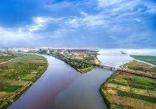
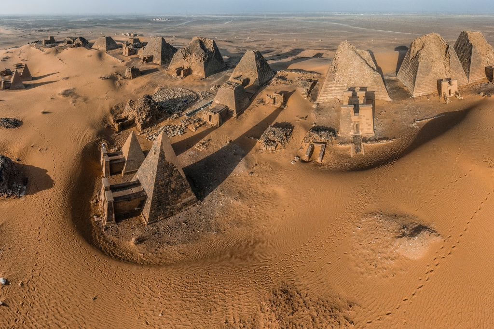
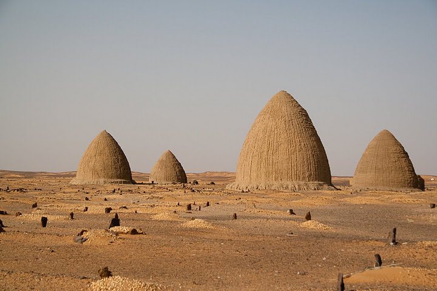
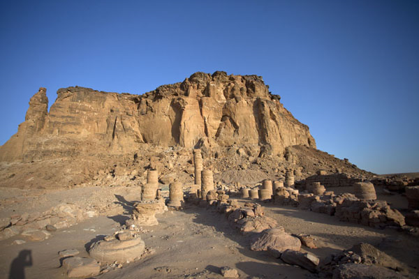
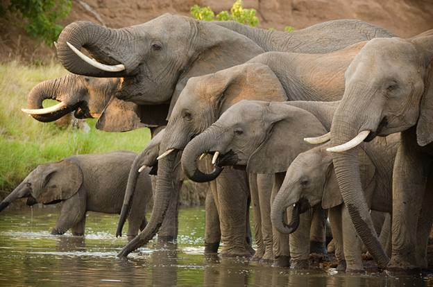

Where the confluence of the Blue and White Nile rivers.

The Nubian Pyramids were built between 720-300 BC.

Old Dongola was the ancient capital of the Christian kingdom in Sudan.

Gebel Barkal Mountain, in the Karima village in the Northern Province of Sudan.

view of Sanganeb Lighthouse, Sanganeb National Park, Port Sudan.

Dinder National Park is a biosphere reserve in eastern Sudan.